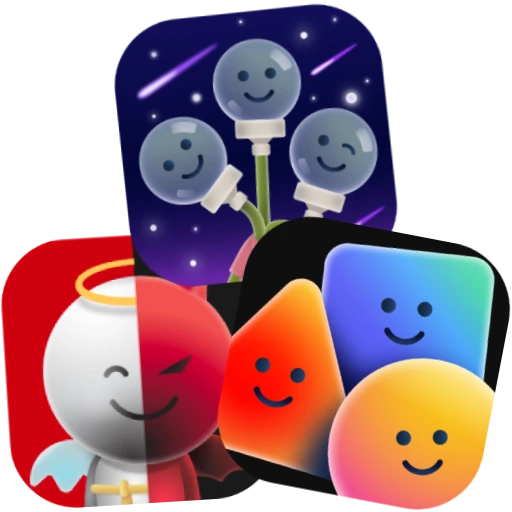
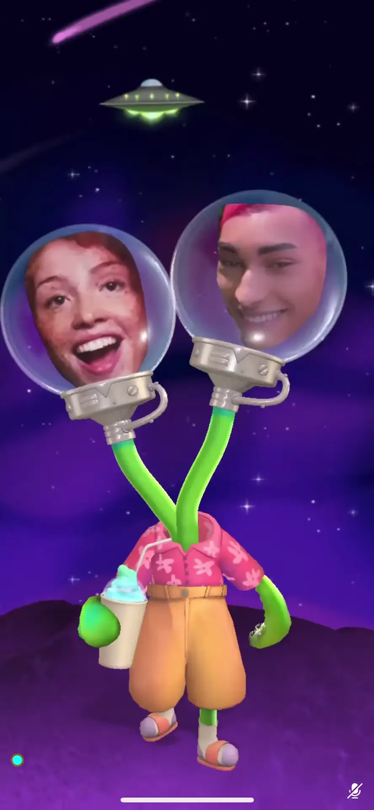

Social AR

Social AR experiences are group video calling AR effects that create shared environments for everyone on the call. Unlike games, there isn't a specific goal to achieve — instead, callers can interact with each other and experience virtual spaces together, composing participants into the same screen space. Use the carousel below to explore each experience.


Multihead Alien
Composing the faces of all the present callers into the heads of a many-headed alien enjoying a stroll on its tiny planet, this AR experience takes over the whole phone screen and is consistent for each caller, using networking technology to allow callers to see others moving their heads around in space.